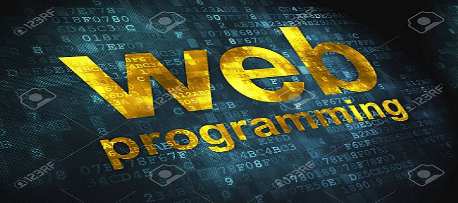

برنامه نویسی وب یکی از شاخه های برنامه نویسی محسوب می شود. این شاخه امروزه دارای بازار کار زیادی می باشد. با به دست آوردن مهارت های لازم برای توسعه صفحات وب می توانید فرصت های شغلی مناسب برای خود فراهم آورید. در این درس، به نحوه ساخت و توسعه یک وب سایت و انتشار آن در اینترنت، پرداخته خواهد شد.
نحوه آموزش این درس در ترم جاری به صورت پروژه محور خواهد بود و سعی خواهیم کردم با انجام پروژهای مختلف مهارت و دانش لازم را برای ورود به عرصه بازار کار در این زمینه فراهم آوریم. لازم به ذکر است که با توجه به گستردگی مباحث درس، اختصاص زمانی بسیار فراتر از یک درس دانشگاهی در طول ترم، لازمه موفقیت در کسب مهارت های لازم در این زمینه خواهد بود.

سخنرانی تیم برنرزلی در TED
اسلایدهای درس
وب چیست؟
اينترنت شبکه ای از شبکه های مرتبط به يکديگر بوده که بر روی آن سرويس های متعددی بمنظور ارائه خدمات فعال می باشند. بدون شک سرويس وب يکی از مهمترين سرويس های موجود بر روی اينترنت است که بيشترين تاثير را در عموميت يافتن اينترنت در سطح جوامع بشری برعهده داشته است.
زبان نشانه گذاری HTML را می توان اولین زبانی دانست که برای پیاده سازی صفحات وب، می توان از آن استفاده کرد. زبان HTML نیز به مرور دست خوش تغییرات فراوانی شد و در به روز رسانی هایی که برای آن ارائه می شود. HTML5 نسخه به روز رسانی شده زبان نشانه گذاری HTML می باشد.
واژه CSS از عبارت Cascading Style Sheets گرفته شده است که با استفاده از آن نوع متن، رنگ، نحوه چینش نوشته، تصاویر و ... را کنترل کرد. در واقع می توان گفت که با html می توان محتوای صفحه را ایجاد کرد و با CSS نحوه چگونگی نمایش این محتوا را تعیین کرد.
یک صفحه وب به طور کلی دارای دو بخش Client Side و Server Side است. بخش Client Side را می توان به سه بخش اساسی تفکیک کرد. اول ساختار صفحه است که توسط HTML ساخته می شود. دوم شکل و شمایل و رنگ و لعاب صفحه است که در CSS تعیین می شود و سوم منطق برنامه در سمت کلاینت است که با زبان های اسکریپتی مانند JavaScript مشخص می شود.
یکی از امتیازات مهم سایت ها از نظر طراحی واسط کاربری و UI، واکنش گرا بودن آن در هر اندازه و رزولوشنی است. یعنی سایت بتواند در هر دستگاهی، یک نمایش خوب و مناسبی از خود ارائه کند. برای این کار روش های مختلفی وجود دارد. فریمورک بوت استرپ (Bootstrap) یکی از این فریم ورک های محبوب است که شما می توانید به وسیله آن، بسیار راحت، یک قالب واکنش گرا را طراحی کنید.
AngularJS یک زبانی برای ساخت اپلیکیشن های تک صفحه ای (Single Page Application) می باشد. Angular یک فریمورک جاوا اسکریپت است و بر مبنای مدل MVC می باشد. این فریمورک توسط گوگل عرضه شده است. این فریمورک از دستورالعملهایی که میتوانند در HTML وارد شوند استفاده میکند تا برنامه کاربردی بیشتری را در اختیار کاربران قرار دهد.
زبان برنامه نویسی PHP یکی از زبان های برنامه نویسی سمت سرور است که کاربرد اصلی آن، در پیاده سازی وبسایت های دینامیکی (پویا) است. زبان برنامه نویسی PHP امروزه پر کاربردترین زبان برنامه نویسی سمت سرور است که برای پیاده سازی وب سایت های دینامیکی (پویا) استفاده شده است.
یک پایگاه داده شامل مجموعه ای داده ها می باشد که به صورت منظم و ساماندهی شده در کنار یکدیگر قرار گرفته اند. MySQL یک سیستم مدیریت پایگاه داده رابطه ای (RDBMS) است که امکان ذخیره سازی، جستجو، مرتب کردن و بازیابی داده ها را از طریق وب فراهم می کند.
امروزه شاهد پیچیدگی و یکپارچگی صفحات وب در اپلیکیشن های استاندارد وب هستیم. گرچه پیشبینی دقیق آینده آسان نیست اما میتوان سیر حرکت آن را تا حدودی پیشبینی کرد.کسانی که این روند را دنبال کنند، میتوانند نسبت به سایرین پیشرفت بیشتری داشته و به عصر جدید تکنولوژی وارد شوند.